Saka, Hiroshima: things to do, food and stays
Saka · Hiroshima
Saka
Highlighted on the Hiroshima map.
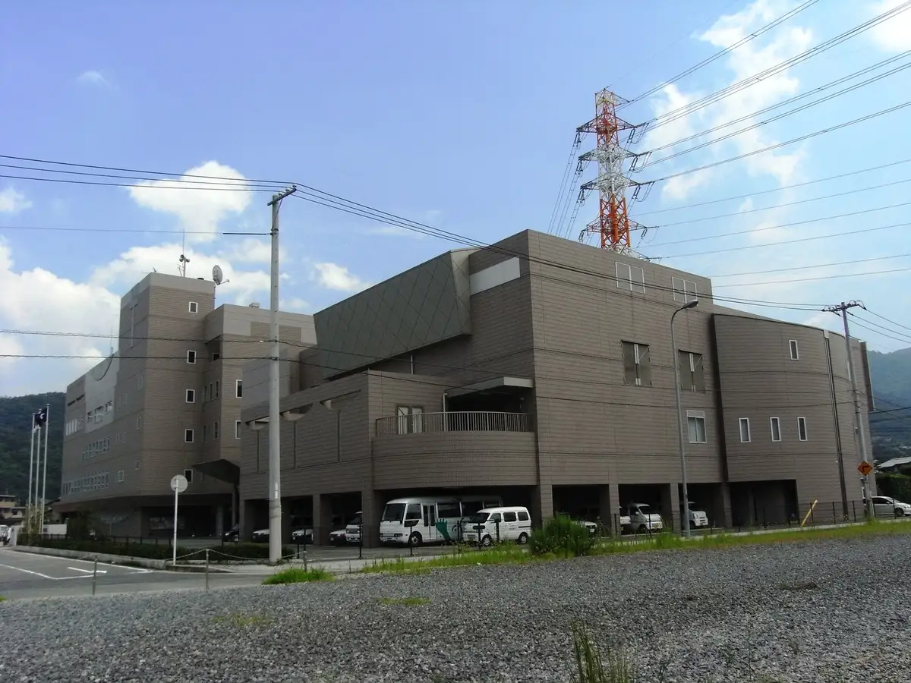
Stay
No bookable places to stay found in Saka — nearest options in Kaita.
Dining
博多屋台一竜 パルティフジ坂店
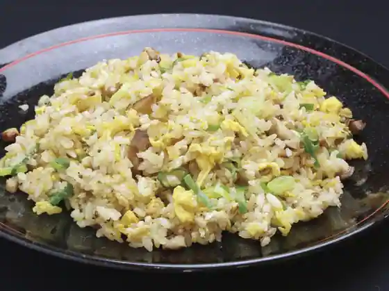
Hakata Yatai Ichiryo Paruteifuji Saka
お好み焼 こいけ
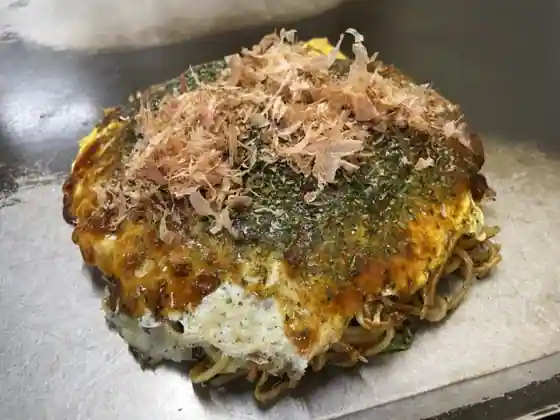
O Konomi Yaki Koike
パティスリー レクール
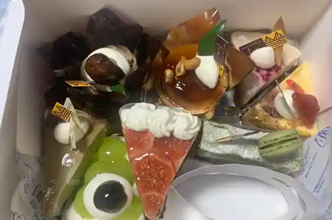
Pateisuri Rekuru
禅ぱん
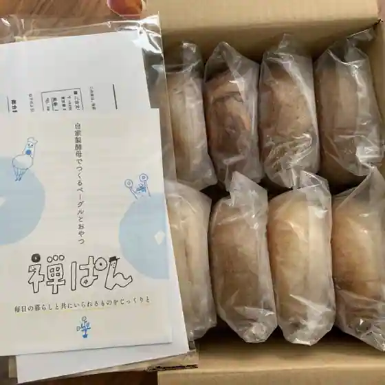
Zen Pan
ALOHA CAFÉ Pineapple ベイサイドビーチ坂店
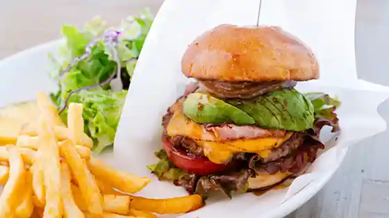
ALOHA CAF E Pineapple Beisaidobichi Saka
レストランカリブ
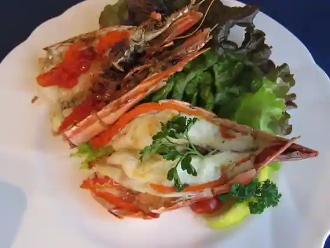
Restaurant Karibu
台湾料理 福祥閣
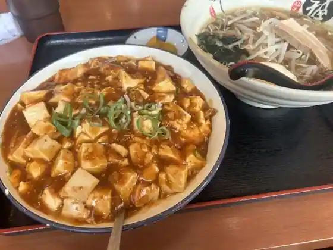
Taiwan Ryori Fukusho Kaku
わきみず亭
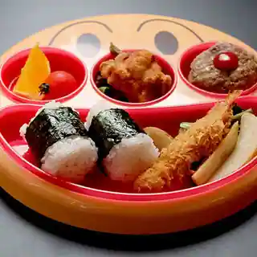
Wakimizu Tei
Italian Kitchen VANSAN パルティ・フジ坂店
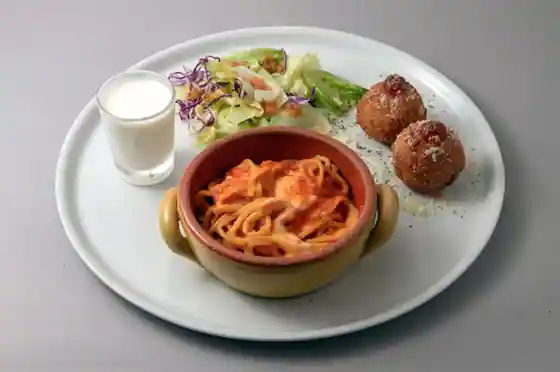
Italian Kitchen VANSAN Parutei Fuji Saka
海人
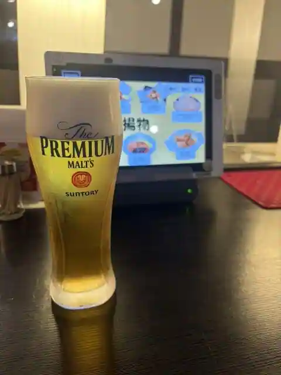
Ama
パクパク ラ・ムー坂店
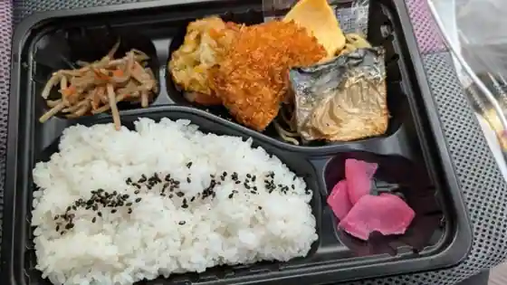
Pakupaku Ra Mu Saka
お好み焼き 西谷
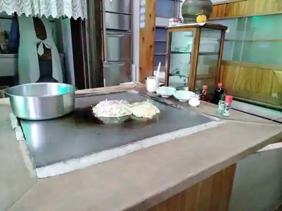
O Konomi Yaki Nishitani
壮家
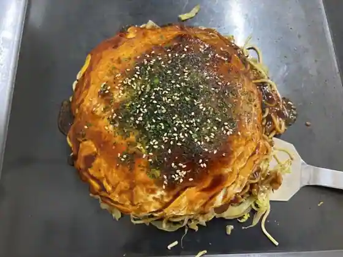
So Ie
古民家Bar あめのちハレ
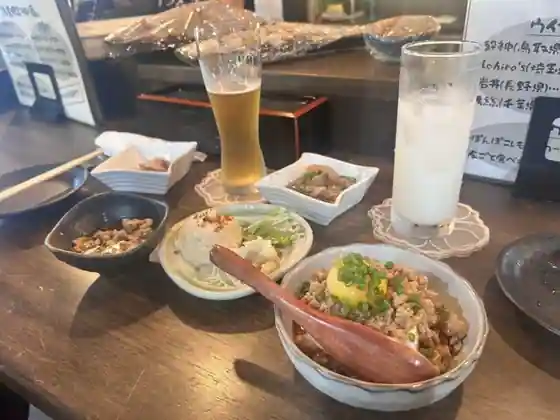
Ko Minka Bar Amenochi Hare
やよい軒 パルティフジ坂店
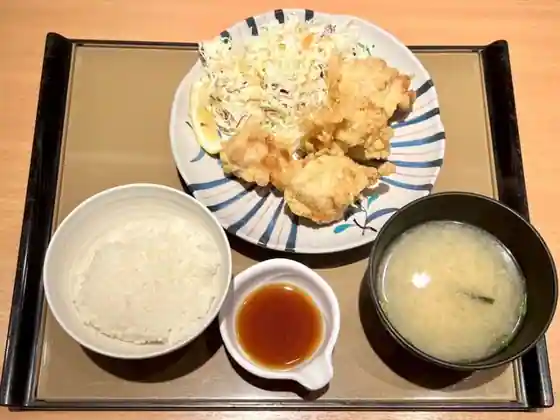
Yayoi Ken Paruteifuji Saka
じゃんじゃか 坂店
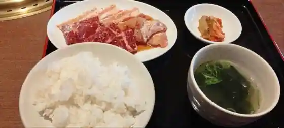
Janjaka Saka
餃子の王将 パルティ・フジ坂店
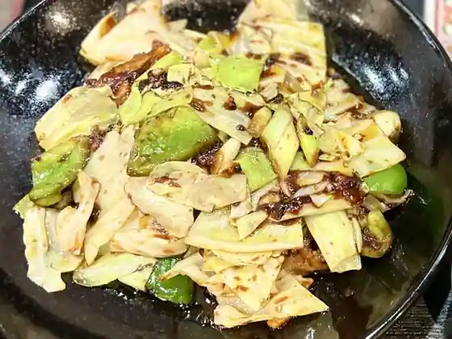
Gyoza No Osho Parutei Fuji Saka
三河屋珈琲 パルティ坂店
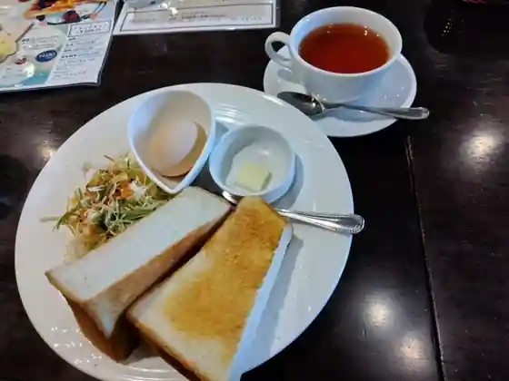
Mikawa Ya Coffee Parutei Saka
フランス菓子 パリ土産
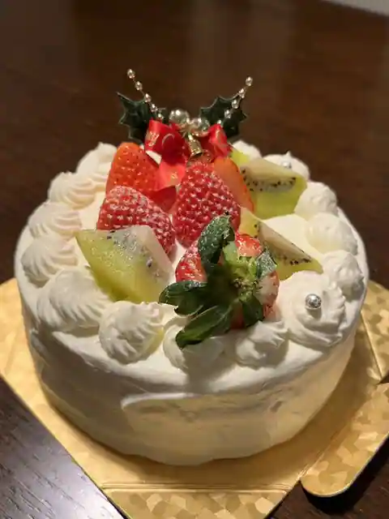
Furansu Kashi Pari Miyage
びっくりドンキー 安芸坂店
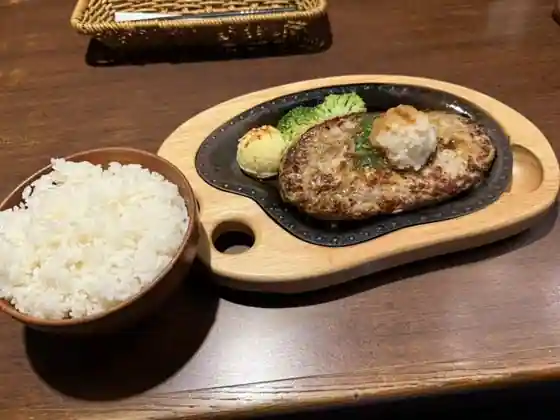
Bikkuri Donki Aki Saka
どんと 安芸店
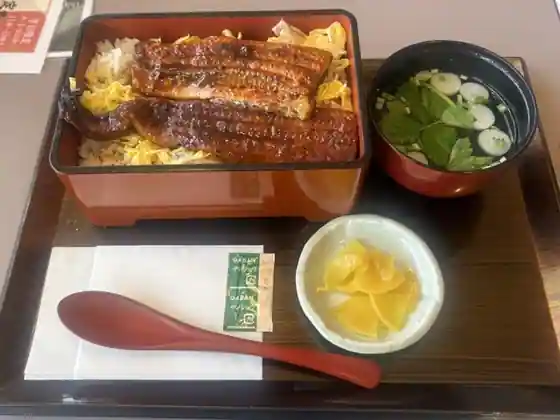
Donto Aki
なか卯 安芸坂店
Naka U Aki Saka
グリーンオアシス フジグラン安芸店
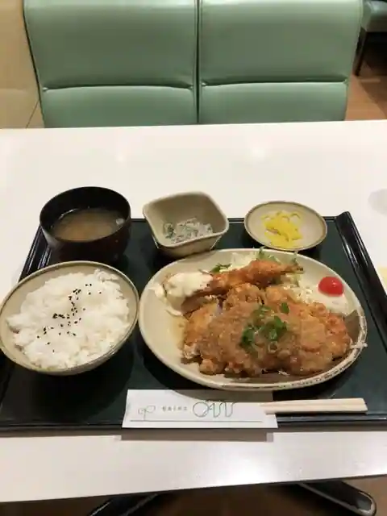
Gurin'Oashisu Fujiguran Aki
プティ・グー
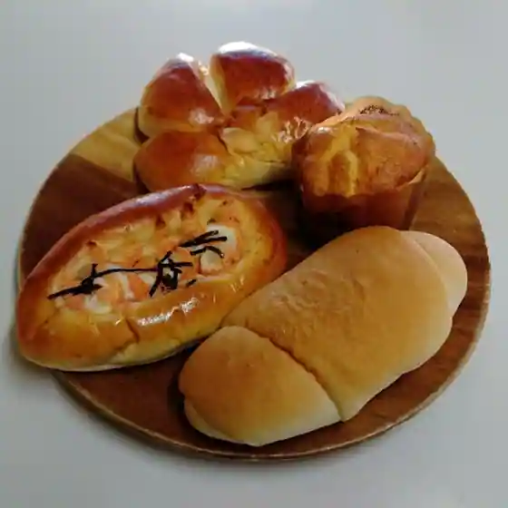
Putei Gu
Sights
Beisaido Beach Saka
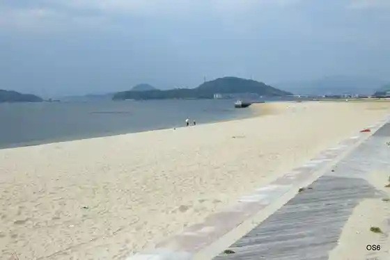
Yokohama Park
Yahatayama Hachiman Shrine
Shimohanahoru
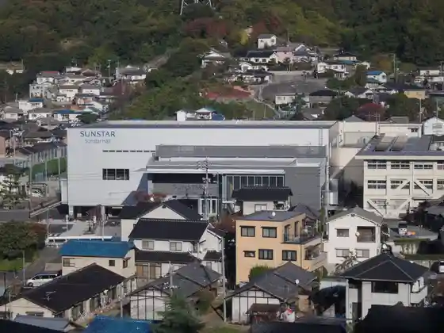
Saka Ekimae
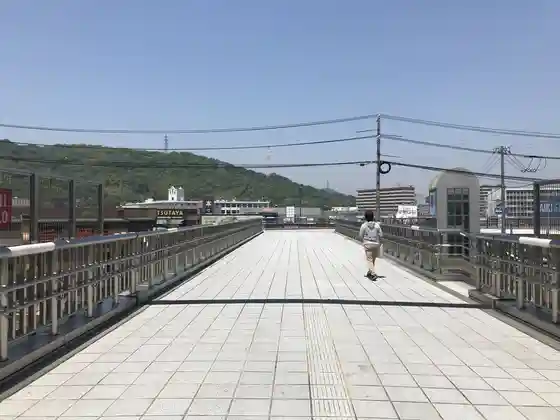